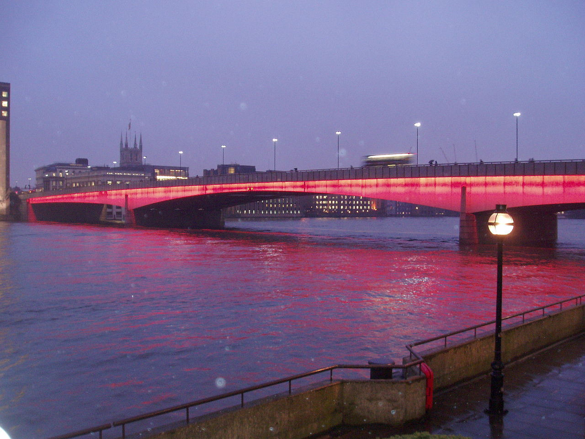
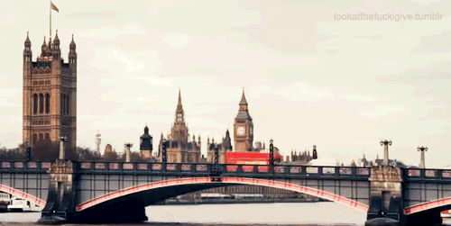

Podul Londrei (London Bridge) este un pod, construit peste râul Tamisa, care leagă centrul istoric al Londrei de districtul Southwark. Așezat între Cannon Street Railway Bridge și Tower Bridge, formează capătul de vest al zonei numite Pool of London. Spre sud față de pod se află Catedrala Southwark și gara London Bridge; spre nord se află „Monument to the Great Fire of London” (Monumentul marelui incendiu din Londra) și stația de metrou Monument. A fost singurul pod peste Tamisa în aval de Kingston până la ridicarea Podului Putney în 1729. Podul care există în prezent a fost inaugurat în 1973 și este ultimul din succesiunea de poduri care au fost construite în acest loc și au purtat același nume. Totuși podul se află în proprietatea și administrarea Bridge House Estates, o fundație patronată de City of London Corporation (Corporația Londrei - organul de conducere municipal al centrului istoric al orașului Londra).
Un pod a existat pe același loc sau în apropiere de acesta încă din perioada ocupației romane, acum aproape 2000 de ani. În jurul anului 50 e.n. romanii au construit primul pod peste Tamisa în zona Londrei, probabil un pod militar de lemn, pe pontoane. În jurul anului 55 e.n. a fost construit un pod pe piloni și romanii au întemeiat un mic târg lângă acesta - localitatea Londinium. Așezarea și podul au fost distruse în timpul revoltei conduse de Regina Boadicea în anul 60 e.n. Victoria acesteia a fost de scurtă durată întrucât romanii i-au învins pe rebeli foarte curând și au organizat construirea unui oraș nou, fortificat. Zidul Londrei a supraviețuit din secolul al II-lea până în zilele noastre. Noua așezare și noul pod au fost construite în zona podului din prezent, asigurând accesul la porturile din sud - prin intermediul drumurilor care au devenit ulterior străzile Stane și Waitling.
Podul s-a deteriorat după retragerea romană. Cum și Londinium fusese părăsit, nu prea mai era nevoie de un pod în acest loc, iar în perioada Saxonă râul a devenit frontiera politică dintre regatele inamice Mercia și Wessex. Condițiile politice necesare pentru ca un pod să fie construit din nou în zonă au apărut o dată cu șocul invaziei vikingilor, recucerirea orașului de către regii din Wessex și reocuparea acestuia de către Alfred cel Mare. Totuși, nu există dovezi arheologice cu privire la construirea unui pod înainte de domnia lui Ethelred și de încercările acestuia de a opri invazia vikingilor din anii 990 e.n. În anul 1014, în conformitate cu un poem popular scandinav, podul a fost distrus de prințul norvegian Olaf, în timp ce îi dădea ajutor regelui Ethelred în ceea ce, dacă a fost și adevărat, a fost o încercare reușită de a diviza forțele de apărare ale danezilor (care dețineau orașul fortificat al Londrei și Southwark-ul), prin această manevră fiind posibilă recucerirea Londrei pentru regele anglo-saxon. Se pare că acest episod a inspirat cântecul pentru copii „Podul Londrei se dărâmă”
City of London este centrul istoric al orașului, și în același timp cel mai important cartier financiar al Regatului Unit.
Londra este un motor urias al economiei lumii. Londra a produs 365 miliarde $ în 2004 (17% din PIB-ul Regatului Unit), iar intreaga zona metropolitana londoneza a produs circa 30% din PIB-ul Regatului, adica mai mult decit PIB-ul Braziliei sau Rusiei.
Londra este un centru internațional al artelor, muzicii, muzeelor, și multor altora.
Londra găzduiește cinci orchestre simfonice: London Symphony Orchestra, London Philharmonic Orchestra, Royal Philharmonic Orchestra, Philharmonia și BBC Symphony Orchestra. Principalele săli de concerte simfonice sînt Royal Albert Hall, Barbican Centre, Royal Festival Hall și Queen Elizabeth Hall. Royal Opera House din Covent Garden este casa Operei Regale și a Baletului Regal.
În Londra și-au început activitatea trupe rock celebre precum The Clash, Led Zeppelin, The Libertines, sau Pink Floyd. Săli de concerte rock celebre sunt Brixton Academy, Astoria sau Hammersmith Apollo.
Londra găzduiește carnavaluri și parade celebre, cum ar fi Carnavalul din Notting Hill, sau paradele de Sfântul Patrick (17 martie) sau Sfântul Gheorghe (23 aprilie).
În Londra se găsesc peste 30 de teatre, majoritatea concentrate în West End. Cele mai multe sunt comerciale și pun în scenă musical-uri și alte piese populare. Teatre "ne-comerciale" sunt National Theatre, The Globe (reconstrucție fidelă a vechiului teatru al lui Shakespeare), Old Vic și Young Vic.
| Nr.crt. | Obiectiv |
|---|---|
| 1 | Big Ben |
| 2 | Palatul Buckingham |
| 3 | Roata din Londra |
| 4 | Tower Bridge |
| 5 | Turnul Londrei |
| 6 | Palatul Westminster |
| 7 | London Dungeon |
Personalități marcante din Londra:
City-ul deține propriul corp de poliție, separat de Poliția Metropolitană. Populația permanentă a City-ului este de doar 7000 de locuitori, însă aici lucrează peste 300.000 de persoane. Calitatea de centru financiar a City-ului a început să se dilueze în ultimii ani, o dată cu inaugurarea în Docklands, în estul orașului, a complexului Canary Wharf.